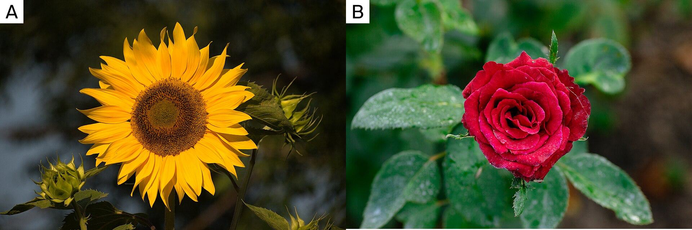
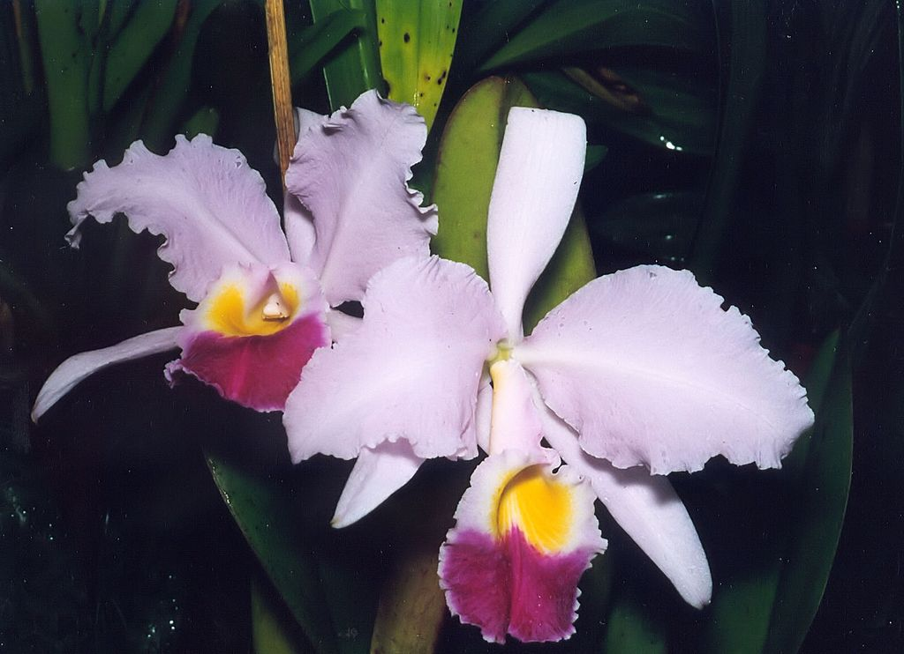
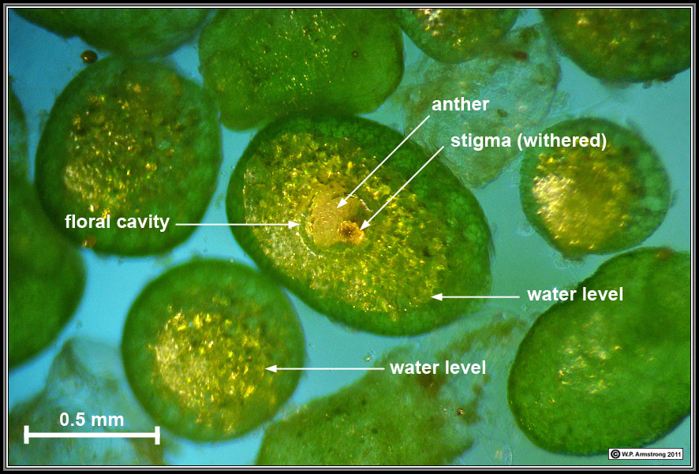
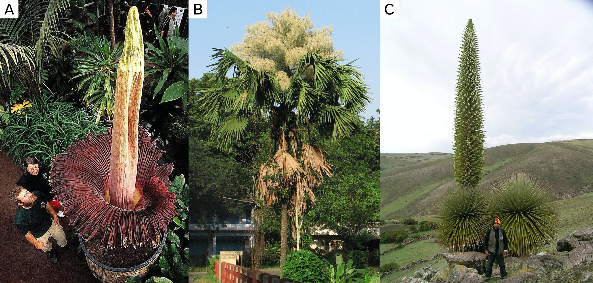
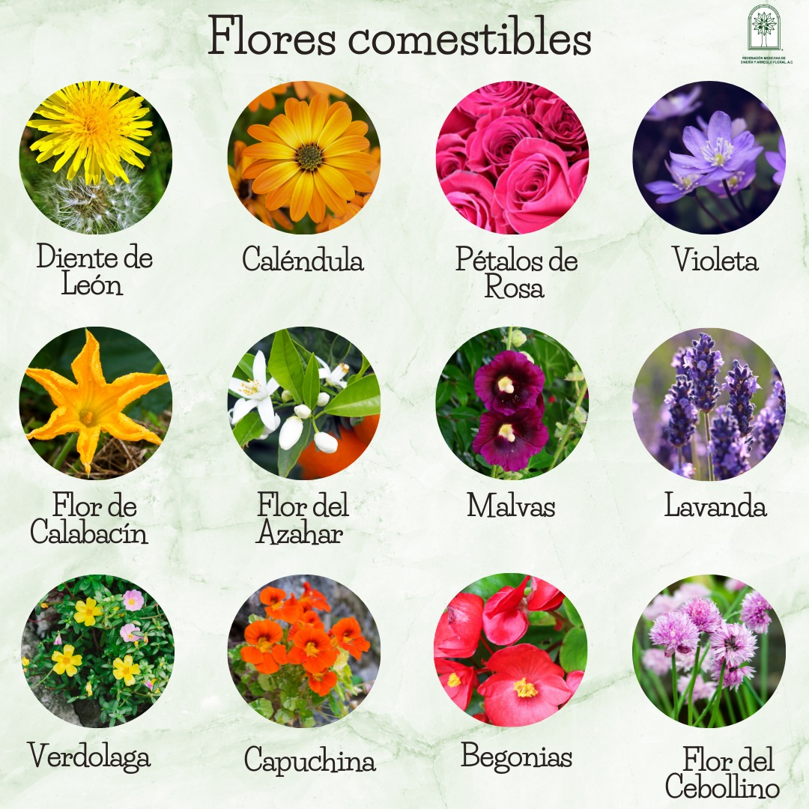
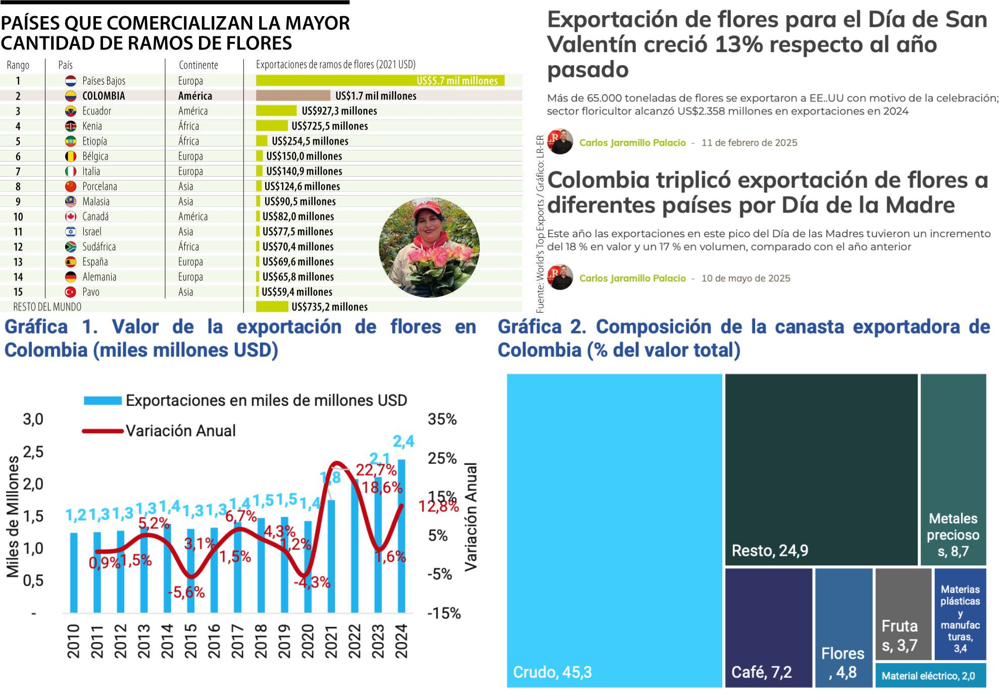
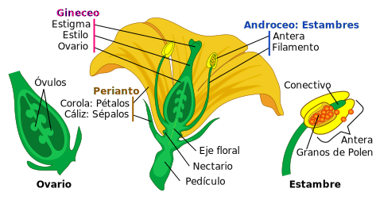
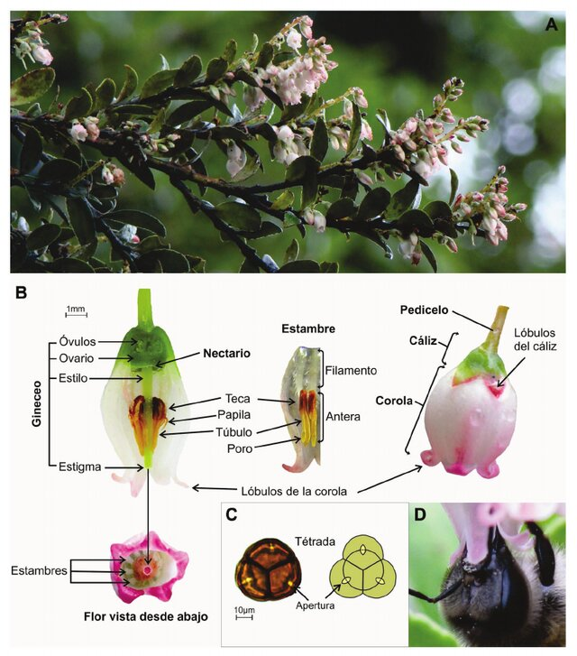

Flor
Grupo de Estudios Botánicos GEOBOTA
Universidad de Antioquia
Biología de las plantas, 2025-1
La flor más conocida
Fig 1: Las «flores» más populares. A. El girasol (Helianthus annuus, Asteraceae). B. La Rosa (Rosa spp., Rosaceae).
La flor nacional de Colombia
Fig 2: Flor de mayo o lirio de mayo (Cattleya trianae, Orchidaceae) es la flor nacional de Colombia. Especie dedicada a José Jerónimo Triana, quizá el botánico colombiano más importante de todos los tiempos. Arne and Bent Larsen or A./B. Larsen, CC BY-SA 2.5 DK, via Wikimedia Commons.
La flor más pequeña
Fig 3: Wolffia columbiana es una planta acuática de la familia Araceae. Es una de las plantas más pequeñas y tiene la flor más pequeña del mundo. Armstrong (2023).
La flor más grande

Fig 4: Rafflesia arnoldii es una planta parásita de la familia Euphorbiaceae. Con más de 1 m diámetro es la flor más grande del mundo. LukeTriton, CC BY-SA 4.0, via Wikimedia Commons.
La inflorescencia más grande
Fig 5: Las inflorescencias más grandes del mundo. A. Aro gigante (Amorphophallus titanum, Araceae), supera los 3 m de altura. B. Palma de Ceilán (Corypha umbraculifera, Arecaceae), entre 6 y 8 m. C. Puya raimondii (Bromeliaceae), alcanza hasta 10 m.
Flores comestibles
Fig 6: Algunas flores comestibles. Federación Mexicana de Jardinería y Arreglo Floral (2022).
Flores en Colombia
Fig 7: Colombia es el segundo exportado de flores a nivel mundial. Cuenta con más 60 especies de flores y más de 1.300 variedades. Agronegocios (2023, 2025a, 2025b), Córdoba & Osorio Quintero (2025).
Qué es una flor
Estructura reproductiva de las plantas con flores; vastago modificado y determinado que porta esporófilos (estambres y/o carpelos), con o sin hojas modificadas externas, denominadas perianto (sépalos y pétalos). Simpson (2019)
Flor: partes
Fig 9: Partes de una flor ideal. LadyofHats, Public domain, via Wikimedia Commons.
Flor: ejemplo
Fig 10: Mortiño (Vaccinium meridionale, Ericaceae). A. Inflorescencia. B. morfología de la flor. C. Grano de polen. D. Polen sobre la cabeza de Apis mellifera. Chamorro & Nates-Parra (2015).
Flor: verticilos y componentes
- Verticilo: conjunto de hojas que se insertan en un mismo nudo
| Verticilos | Componentes |
|---|---|
| Cáliz | Sépalos |
| Corola | Pétalos |
| Androceo | Estambres |
| Gineceo | Carpelos |
- Perianto: conjunto de cáliz y corola
- Perigonio: cáliz y corola indistinguibles (tépalos)
- Completa: presenta todos los verticilos
- Incompleta: carece de algún verticilo
Perianto: cáliz y corola
- El perianto (o perigonio) es el conjunto más externo de hojas modificadas no reproductivas de una flor
- Protege los órganos florales jóvenes y favorecer la polinización
- Ausente en algunas plantas con flores muy pequeñas y reducidas
- Origen en el meristema apical floral, en forma de primordios foliares
- Puede conservar características foliares:
- Sépalos: generalmente verde, con estomas y venas
- Pétalos: con venas y a veces estomas vestigiales
- Puede modificarse drásticamente durante el desarrollo y perder su apariencia de hoja
- Arreglo espiralado o verticilado
Perianto: ciclicidad y merosidad
Ciclicidad: número de verticilos
- Uniseriado (1 verticilo), biseriado (2 verticilos), triseriado (3 verticilos), tetraseriado (4 verticilos), multiseriado (> 3 verticilos)
- Diclámideo (cáliz y corola distintas), homoclámideo (cáliz y corola similares)
Merosidad: número de piezas
- Isómero (igual número en ambos verticilos), anisómero (diferente número entre verticilos)
- Bímero (2 piezas), trímero (3 piezas), tetrámero (4 piezas), pentámero (5 piezas)
Aclámideo (sin perianto), apetáleo (sin pétalos), asepáleo (sin sépalos)
del latín clamide: vestidura
Perianto: fusión
Sin fusión
- Aposepáleo (corisepáleo): sépalos libres
- Apopetáleo (coripetáleo): pétalos libres
- Apotepáleo (coritepáleo): tépalos libres
Con fusión
- Sinsépalo (gamosépalo): sépalos fusionados
- Simpetáleo (gamopetáleo): pétalos fusionados
- Sintepáleo (gamotepáleo): tépalos fusionados
Perianto: tipos
- El tipo de perianto describe su forma y estructura general
- Usualmente se basa en la corola, por lo que a menudo podría llamarse también tipo de corola
- Se tiene en cuenta forma, grado de fusión, orientación y merosidad
- Diagnóstico en algunos clados de angiospermas y refleja adaptaciones (polinización)
Androceo
- Verticilo floral que comprende todos los estambres
- Se inicia como un primordio en el meristema apical floral
- Estambre, interpretado como una hoja modificada portadora de esporangios (microsporófilo)
- Estambres laminares
- Forma aplanada y foliosa. Dos tecas en la cara adaxial
- Estambres filamentosos
- Forma cilíndrica o filiforme. Poseen un filamento y una antera
- Estaminodios
- No funcionales. Pueden parecer fértiles o estar modificados
- Estambres laminares

Androceo (del latín androecium, y este del griego ἀνήρ, ἀνδρός = ‘varón’ y οἰκίον = ‘casa’)
Estambre: ciclicidad y posición
- Ciclicidad
- Uniseriado, biseriado, triseriado, tetraseriado
- Posición relativa a otras piezas florales
- Antisépalo: frente a los sépalos
- Alternipétalo: entre los pétalos
- Antipétalo: frente a los pétalos
- Alternisépalo: entre los sépalos
- Posición relativa a ciclicidad y número
- Haplostémono: un verticilo, opuestos a sépalos
- Obhaplostémono: un verticilo, opuestos a pétalos
- Diplostémono: dos verticilos: externo antisépalo, interno antipétalo
- Obdiplostémono: dos verticilos: externo antipétalo, interno antisépalo
Anteras: estructura y tipos
- Unidades que contienen el polen
- Ubicadas en los estambres de la mayoría de las angiospermas
- 2 tecas, cada una con 2 microsporangios. Los microsporangios se fusionan en lóculos
- Conectivo: tejido entre las tecas
- Tipos de anteras
- Ditecal: 2 tecas, 4 microsporangios
- Monotecal: 1 teca, 2 microsporangios
- Polinia: masas de polen fusionadas en una sola unidad

{kind=link}
{kind=link}
{kind=link}
{kind=link}
{kind=link}